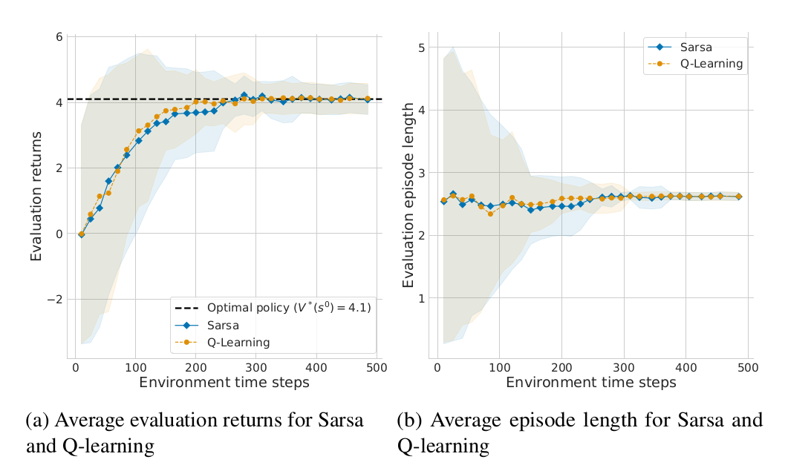

Como avaliar o desempenho de um agente?
O desempenho de um agente pode ser avaliado de diversas formas. A forma mais comum é através da curva de aprendizagem. A curva de aprendizagem mostra o desempenho do agente ao longo do tempo de treinamento. O desempenho pode ser medido em termos do objetivo de aprendizagem (e.g., retorno acumulado) bem como outras métricas secundárias.

Para gerar a figura acima da esquerda foi necessário executar o treinamento do agente N vezes com os mesmos hiperparâmetros, calculando a média e mostrando a variância via gráfico. No mesmo gráfico também é mostrado o retorno acumulado ótimo.
A figura acima do lado direito mostra outra métrica utilizada para acompanhar o aprendizado do agente. Neste caso, a métrica é a quantidade de passos necessários para o agente chegar no objetivo.
Abaixo são apresentados outros gráficos que ilustram o aprendizado do agente.

Referências
As imagens acima foram retiradas do capítulo 2 do livro:
Stefano V. Albrecht, Filippos Christianos, and Lukas Schäfer. Multi-Agent Reinforcement Learning: Foundations and Modern Approaches. MIT Press, 2024.